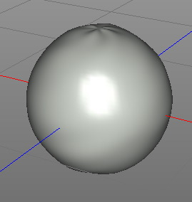
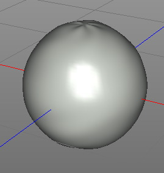

Smooth Modifier
The smooth modifier applies a Laplacian smooth operation on the mesh which averages the neighboring vertices of a mesh. This smoothes irregular meshes nicely but also causes the small loss of volume.
 

Iterations=10
Properties
- Iterations: The more iterations you apply the smoother the mesh gets.